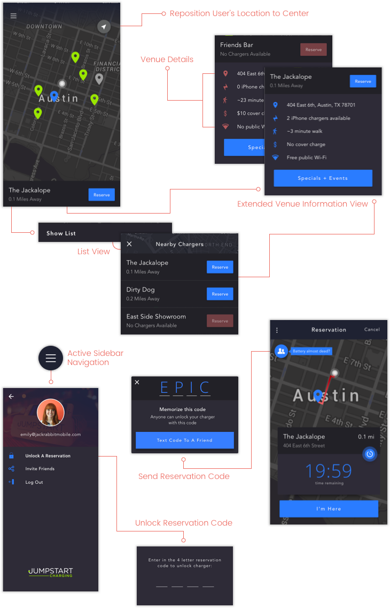

The Jumpstart Charging app is a project that I hold near and dear to my heart because it was the first time I was the lead designer on a project. The purpose of the app is to help users locate the nearest Jumpstart charging stations, learn information about the locations the stations are at, and reserve a port at the station so that they can guarantee a spot once they arrive.

Research
When the client first came to us, we were presented with a lot of research opportunities with multiple aspects to dig into.
The research began with checking out what the current competitors were doing. Since we were working alongside a hardware team, we wanted to ensure the client’s hardware design would succeed based on what is currently excelling on the market, while at the same time figuring out what we could do differently to set us apart from the rest.
Once we decided on how the hardware would look and function, we created a prototype of the hardware to use while out field testing. We set up the prototype at a bar on 6th Street to test how well people responded to it, as well as seeing what price point they were willing to pay to use the charging station by varying the amount throughout the night.
Lastly I created a prototype of the reservation feature flow to test how well users were able to maneuver through it. I led the research from start to finish by recruiting testers, creating the script of questions to ask them, conducting the interviews, and analyzing and presenting the results through an experience map.
UI & Interactions

Design
Based on our research findings, our key features we decided to focus on for V1 was the reservation feature. V2 will allow users to view the venue’s events and specials, as well as have the option to upgrade their charging experience by paying a small fee for a faster charge.
Since the target audience is late night bar attendees who have a smart phone with a dying battery, we kept the color scheme dark so that it would be easier on their eyes in darker settings. We also provided users the ability to lower the screen brightness in order to conserve battery while using the app.
In case their phone is about to die, users are able to text a code to a friend for them to unlock their reservation for them. The friend can then unlock the reserved port by entering in the code they received via the “Unlock Reservation” option in the settings menu.
Challenges
One of the major challenges I faced was learning to work with a particularly difficult and aggressive hardware designer. Considering a lot of the hardware functions were based on our research, I learned to approach handling all of my contact with him in a way that was firm, yet amicable, in order to prevent situations that could cause the project to be delayed.
Getting people to see eye to eye with me is kind of my jam and we were eventually on the same page, however due to his behavior the client ended up deciding to switch hardware companies. Regardless, I appreciated the opportunity to grow my communication skills in being able to diffuse unpleasant situations.
Another challenge I faced was how fresh and inexperienced the client was to the mobile apps industry. His lack of knowledge on understanding the processes behind building and designing apps, as well as what iOS and Material Design standards are, really tested my own knowledge and my ability to explain things thoroughly. Through working so closely with him every step of the way, I was able to gain his complete trust and personally invest in the success of his vision.